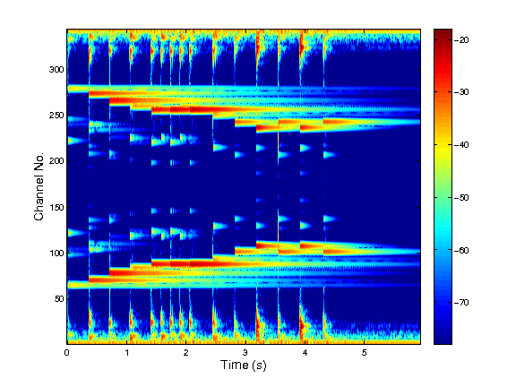

[c,Ls,g,shift,M] = erblett(f,bins,fs,varargin) [c,Ls,g,shift] = erblett(...) [c,Ls] = erblett(...) c = erblett(...)
| f | The signal to be analyzed (For multichannel signals, input should be a matrix which each column storing a channel of the signal) |
| bins | Desired bins per ERB |
| fs | Sampling rate of f (in Hz) |
| varargin | Optional input pairs (see table below) |
| c | Transform coefficients (matrix or cell array) |
| Ls | Original signal length (in samples) |
| g | Cell array of Fourier transforms of the analysis windows |
| shift | Vector of frequency shifts |
| M | Number of time channels |
This function computes an ERBlet constant-Q transform via non-stationary Gabor filterbanks. Given the signal f, the ERBlet parameter bins, as well as the sampling rate fs of f, the corresponding ERBlet coefficients c are given as output. For reconstruction, the length of f and the filterbank parameters can be returned also.
The transform produces phase-locked coefficients in the sense that each filter is considered to be centered at 0 and the signal itself is modulated accordingly.
Optional input arguments arguments can be supplied like this:
erblett(f,bins,fs,'Qvar',Qvar)
The arguments must be character strings followed by an argument:
| 'Qvar',Qvar | Bandwidth variation factor |
| 'M_fac',M_fac | Number of time channels are rounded to multiples of this |
| 'winfun',winfun | Filter prototype (see firwin for available filters) |
The following example shows analysis and synthesis with erblett and ierblett:
[f,fs] = gspi; binsPerERB = 4; [c,Ls,g,shift,M] = erblett(f,binsPerERB,fs); fr = ierblett(c,g,shift,Ls); rel_err = norm(f-fr)/norm(f) plotfilterbank(c,Ls./M,[],fs,'dynrange',60);
This code produces the following output:
rel_err = 5.1339e-16
T. Necciari, P. Balazs, N. Holighaus, and P. L. Søndergaard. The ERBlet transform: An auditory-based time-frequency representation with perfect reconstruction. In Proceedings of the 38th International Conference on Acoustics, Speech, and Signal Processing (ICASSP 2013), pages 498--502, Vancouver, Canada, May 2013. IEEE.